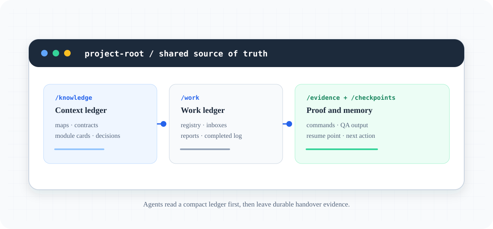

Dogfood closeout · OSBlog
From a real workload
to better control.
UseAgent supervised a bilingual open-source blog through planning, worker fallbacks, audits, quota failure, takeover, QA and Vercel release evidence. This page keeps the successes and the friction visible.

OSBlog's live target for this case study is Vercel: osblog.thuanlyt.id.vn and osblog.vercel.app. VPS, Netlify and local Node are documented targets, not live OSBlog environments.
What was actually evidenced
A light goal and roster became scoped work items, mailboxes and copyable worker prompts.
Unavailable runtimes, quota exhaustion, no-report attempts and takeover history remained visible instead of being rewritten as success.
Independent review reproduced defects; workers added fixes and regressions; a second review checked the result.
Vercel aliases, SSR/SEO routes, feeds, sitemap, robots and existing Cap media have recorded smoke evidence.
Timeline
- Bootstrap.
UA-0001 and UA-0002 established the goal, roster, ledger and first dispatch.
- Fallback.
Unavailable Antigravity/Claude paths and failed Codex waits were preserved; supervisor-local recovery produced a labeled replay.
- Review.
UA-0048 found four real application defects; UA-0052 fixed them and UA-0058 independently re-reviewed the runtime.
- Release.
Vercel and recovery evidence accumulated, while the positive historical-308 fixture stayed intentionally uncreated.
- Takeover.
UA-0091 exhausted quota; UA-0093 resumed from a partial checkpoint and passed its focused security gate.
Findings that changed the product conversation
The strongest result was not task count. It was the ability to distinguish live, local, simulation and blocked evidence.
The OSBlog registry and late reports moved ahead of work/SUPERVISOR_REPORT.md. The next UseAgent improvement should make stale convenience reports visible instead of allowing them to look current.
Provider unavailability and missing browser targets were discovered after waiting. A preflight result for “ready”, “unavailable”, “quota-limited” and “no target” would reduce wasted cycles.
Cap could be healthy while the captured content remained unverifiable. A media manifest and privacy/content gate should exist before a recording is promoted.
Capture manifest
The existing OSBlog Cap GIF and MP4 are committed, hashed and documented as a real public-site capture. The fresh UA-0086 capture was not promoted because its Brave window could not be verified. See the full capture manifest and the source-anchored Markdown case study.
Tóm tắt bằng tiếng Việt
OSBlog là workload thật để kiểm chứng UseAgent. Supervisor đã tạo task/DAG, dispatch cho Codex, Claude và Antigravity-style identities, giữ failure/quota history, đọc report, audit, QA, takeover và evidence Vercel. Media Cap cũ được giữ vì đã có provenance; capture mới bị block vì không xác minh được browser target.
Finding quan trọng nhất là report convenience có thể stale so với registry. Hướng cải tiến UseAgent là report freshness, runtime preflight, typed evidence provenance, takeover lineage, capture privacy gate và cycle metrics.
Read the full evidence record